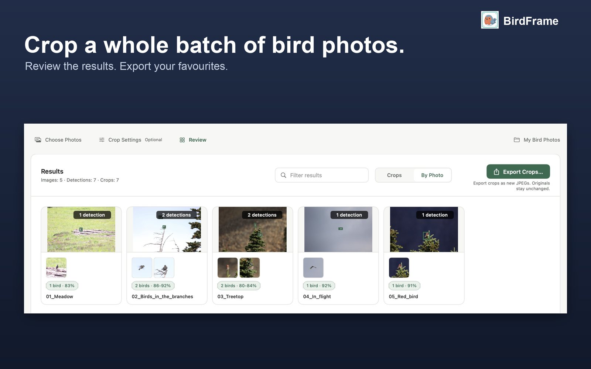

BirdFrame プレスキット
野鳥の写真を、1枚ずつ手作業でトリミングする代わりに、フォルダごとまとめて処理できる Mac・Windows 用アプリです。
掲載用の紹介文
BirdFrame は、野鳥写真から小さく写った鳥や枝に隠れた鳥を見つけ、選んだ構図で一羽ずつ切り出します。何千枚もの写真をまとめて処理し、元のフルサイズ画像からトリミングします。画像の縮小や生成は行いません。Mac・Windows ともに1回50枚まで、何度でも無料で使えます。
製品情報
- Windows 版
- Windows 10・11。フォルダを選んで処理し、別の JPEG として書き出します。カメラ RAW には Microsoft の無料 RAW 画像拡張機能が必要です。対応状況は機種によって異なります。サンプル写真付きの一括トリミング手順 · WindowsでRAW写真を開く手順
- Mac 版
- macOS 15 以降。フォルダに加え、Apple の「写真」のアルバムも使えます。「写真」では元に戻せる編集として保存できます。
- 料金
- 1回50枚まで無料。さらに多くの写真を一度に処理するには、各ストアで買い切りの解除オプションを購入できます。購入はプラットフォームごとに必要です。現在の価格は各ストアでご確認ください。
- 画像の取り扱い
- 写真は端末内で処理され、アップロードされません。フォルダから書き出す場合も元のファイルは残ります。
アプリの画面は英語表記です。
掲載用の画像
BirdFrame の紹介記事に使える画像です。リンクから元の画像をダウンロードできます。

